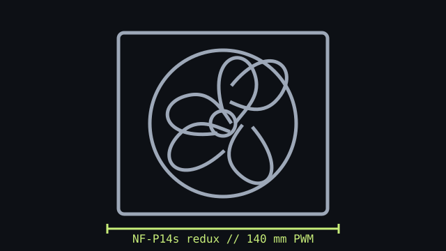

[ IDENTIFIED MODEL // NF-P14s redux-1500 PWM ]
Noctua NF-P14s redux-1500 PWM
A square-frame 140 mm PWM model from Noctua's redux line. Verify the redux-1500 PWM suffix; other P14 variants use different control and speed profiles.

Exact model: NF-P14s redux-1500 PWM, single fan. Figures below are not for the 1200 RPM or fixed-speed models.
Specifications
| Frame | 140 × 140 × 25 mm |
|---|---|
| Speed / airflow / pressure / noise | 0–1500 RPM; up to 133.7 m³/h (78.69 CFM); 1.91 mm H₂O; 25.8 dB(A). |
| Bearing | SSO bearing |
| Connector / control | 4-pin fan connector; PWM speed control. |
| Electrical | 12 V DC rated; maximum input current 0.2 A. |
| Fit and host compatibility | Requires a square 140 mm fan mount and 25 mm depth; use only where the case or radiator lists 140 mm fan support. Confirm fastener length, clearance, and header/controller current capacity. |
Installation
Check case/radiator documentation for 140 mm hole spacing and usable fan depth. PWM operation requires a compatible 4-pin connection; keep the rotor clear of cables and radiator fittings.
Manufacturer sources
- Noctua — NF-P14s redux-1500 PWM product pageModel identification and intended cooling applications.
- Noctua — NF-P14s redux-1500 PWM specificationsModel-specific dimensions, performance, electrical data, bearing, and connector.